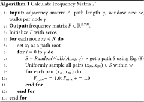

1 Introduction
The explosion in the availability of structured and semi-structured data (e.g., from the internet, social science, physics, biology, and computer science) has led to a wealth of research focusing on the analysis of graphs. Moreover, modern companies often wish to store information in the form of a corporate knowledge graph and apply a variety of machine learning and data mining techniques (e.g., graph mining [8], relational learning [19], security [25], knowledge embedding [27]) for different applications.
One problem of significant interest is the classification of graph nodes from only a small portion of labeled training data and the graph structure. In the context of machine learning, graph-based semi-supervised learning is one such technique that aims to use the graph structure to train models with higher accuracy when only a limited set of labeled data is available. Accordingly, in this paper, we propose a new general semi-supervised learning algorithm that can be applied to different kinds of graphs, such as social networks, knowledge graphs, citation networks, World Wide Web, and so on.
Conventionally, graph-based semi-supervised learning could be defined through the following loss function:
(1)
To avoid this limitation, recent studies have attempted to consider both label and graph structure information in a convolutional manner [2] [9] [15]. In Eq. (2), instead of using an explicit graph-based regularizer in the loss function, a convolutional function Conv is derived to encode the graph structure directly.
(2)
However, by using Eqs. (1) and (2), most of the related work have only considered the local consistency of a graph for knowledge embedding. To sufficiently embed the graph knowledge, we find that the global consistency of a graph has not been well investigated yet. Hence, in this paper, we propose a dual graph convolutional neural network method to jointly take both of them into consideration. The form of the loss function in the proposed strategy is
(3)
The idea of our method is simple. First, during the convolutional process, sample input data (e.g., a feature vector of a node) pass through two kinds of convolutional networks: ConvA and ConvP . Using the graph adjacency matrix and positive pointwise mutual information matrix, the two convolutional networks encode the local and global structure information. Corresponding to the two essential assumptions in semi-supervised learning [32], ConvA embeds the local-consistency-based knowledge (i.e., nearby data points are likely to have the same label), whereas ConvP embeds the global-consistency-based knowledge (i.e., data points that occur in similar contexts tend to have the same label).
During training, a sample makes multiple passes through the two convolutional networks and the random layer-wise dropout [26]. Thus, different transformations of the sample are obtained. The output of either ConvA or ConvP is then used for supervised learning, e.g., $\mathcal {L}_{0}(Conv_{A})$ . However, to give better predictions, an ensemble-oriented regularizer $\mathcal {L}_{reg}(Conv_{A}, Conv_{P})$ for these transformations is derived. By minimizing the difference between predictions from different transformations of an input sample, the regularizer combines the opinions of ConvA and ConvP . Accordingly, $\mathcal {L}_{reg}(Conv_{A}, Conv_{P})$ is an unsupervised loss function.
Overall, the main contributions of this work can be summarized as follows:
- In addition to the graph adjacency matrix-based convolution ConvA , we propose a new convolutional neural network ConvP that depends on the positive pointwise mutual information (PPMI) matrix. Unlike ConvA , which embeds local-consistency-based knowledge, we employ a random walk to construct a PPMI matrix that further embeds semantic information, i.e., global-consistency-based knowledge.
- In addition to the supervised learning on a small portion of labeled training data (i.e., $\mathcal {L}_{0}$ in Eq. (3)), an unsupervised loss function (i.e., $\mathcal {L}_{reg}$ in Eq. (3)) is proposed as a kind of regularizer to combine the output of different convolved data transformations. In a series of experiments considering both ConvA and ConvP , our method is shown to yield better predictions than a single convolutional network.
2 Background to Graph-based Semi-supervised Learning
Semi-supervised learning considers the general problem of learning from labeled and unlabeled data. Given a set of data points $\mathcal {X}=\lbrace x_1, ..., x_l, x_{l+1}, ..., x_{n} \rbrace$ and a set of labels $\mathcal {C}=\lbrace 1, ..., c\rbrace$ , the first l points have labels $\lbrace y_1, ..., y_l\rbrace \in \mathcal {C}$ and the remaining points are unlabeled. The goal is to predict the labels of the unlabeled points.
In addition to the labeled and unlabeled points, graph-based semi-supervised learning also involves a given graph, denoted as an n × n matrix A. Each entry a i, j ∈ A indicates the similarity between data points xi and xj . The similarity can be derived by calculating the distances among data points [33], or may be explicitly given by structured data, such as knowledge graphs [29], citation graphs [14], hyperlinks between documents [20], and so on. Therefore, the key problem of graph-based semi-supervised learning concerns how to embed the additional information of the graph for better label prediction. In approximate terms, we classify the different graph knowledge embeddings into two groups, i.e., explicit and implicit graph-based semi-supervised learning.
2.1 Explicit Graph-Based Semi-Supervised Learning
Explicit graph-based semi-supervised learning uses a graph-based regularizer (i.e., $\mathcal {L}_{reg}$ in Eq. (1)) to incorporate the information in the graph. Conventionally, a graph Laplacian regularizer is defined so as to incur a large penalty when similar data points xi and xj with a large a i, j are predicted to have different labels f(xi ) ≠ f(xj ).
(4)
Many related methods have been proposed as variants of Eq. (4). For instance, in [33], the authors proposed a label propagation algorithm based on Gaussian Random Fields. In [32], a PageRank-like algorithm is proposed to account for both local and global consistency in the graph. Recently, in [30], the authors proposed a sampling-based method. Instead of using the graph Laplacian Δ, they derived a random walk-based sampling algorithm to obtain the positive and negative contexts for each data point. A feed-forward neural network method was then used for knowledge embedding.
2.2 Implicit Graph-Based Semi-Supervised Learning
As mentioned in Section 1, a convolutional process for implicit graph-based semi-supervised learning could be conducted in either the graph vertex domain or the graph spectral domain. We now introduce some work related to each case.
Convolution in the vertex domain. To apply convolution in the vertex domain, a data point xi will usually be transformed in a diffusive manner. A simple example of a k-hop localized linear transform is
(5)
Recently, several methods have used diffusion-based convolution. For instance, in [2], the authors proposed a diffusion-convolutional neural network. In their method, the k-hop diffusion-convolutional results (i.e., a large tensor) are directly used as the input to a neural network. As a result, significant amounts of memory are required to record the input. In [15], the authors proposed a scalable method that conducts 1-hop diffusion on each layer of a neural network. This approach obtained state-of-the-art performance in semi-supervised classification.
Convolution in the spectral domain. We first consider the most simple situation of scalar xi . In this context, the input $X \in \mathbb {R}^{n \times 1}$ is considered as a signal defined on the graph with n nodes. As shown in Eq. (6), the spectral convolution on a graph can then be defined as the multiplication of the signal X with a filter gθ = diag(θ) parametrized by $\theta \in \mathbb {R}^n$ in the graph Fourier domain.
(6)
In [24], the authors discussed different ways to define graph spectral domains and explained the graph Fourier transform in detail. As Eq. (6) is computationally expensive for large graphs, recent studies [9] [12] [15] have attempted to reduce the computational complexity. For instance, in [12], the authors approximated gθ using a truncated expansion in terms of Chebyshev polynomials.
Relation between the two domains. In [24], the authors identified the relation between convolutions in the vertex and spectral domains. That is, when the filter function gθ is approximated as an order-k polynomial, the spectral convolution can be interpreted as a k-hop diffusion convolution. This conclusion was later verified [15]. Thus, by approximating gθ as an order-1 Chebyshev polynomial, after some derivation, it is equivalent to a 1-hop diffusion.
Our work is mainly inspired by [15]. In addition to adjacency matrix-based convolution, we further calculate a PPMI matrix for encoding the semantic information during the convolution. Furthermore, a new regularizer is proposed to combine the different convolutional results for better label prediction.
3 Dual Graph Convolutional Networks
3.1 Problem Definition and an Example
Following the notation in Sections 1 and 2, the input to our model includes a set of data points $\mathcal {X}=\lbrace x_1, ..., x_l, x_{l+1}, ..., x_{n} \rbrace$ , the labels {y 1, ..., yl } for the first l points, and the graph structure. Assuming that each point has at most k features, the dataset is denoted as a matrix $X \in \mathbb {R}^{n \times k}$ . As in previous studies [2] [9] [15] [32], the graph structure is represented by the adjacency matrix $A \in \mathbb {R}^{n \times n}$ .1 Given the input X, {y 1, ..., yl }, and A, our model aims to predict the labels of the unlabeled points.
As shown in Figure 1a, we use the Karate club network [31] as an example to visualize some intermediate results. In this example, as the data points (i.e., graph nodes) do not have any features, we initialize X as the identity matrix. Namely, each node is described by a different one-hot vector of length 34. Our objective is to classify all the nodes into two groups (labeled red and green) correctly.
In the remainder of this section, we introduce our method in three steps. First, for local consistency, we introduce the convolutional method using the graph adjacency matrix A. Another convolutional method based on a random walk is then proposed to encode the semantic information for global consistency. Finally, we introduce a regularizer for the ensemble.
3.2 Local Consistency Convolution: ConvA
By directly utilizing the state-of-the-art method proposed in [15], we formulate the graph-structure-based convolution ConvA as a type of feed-forward neural network. Given the input feature matrix X and adjacency matrix A, the output of the i-th hidden layer of the network Z (i) is defined as:
(7)
In [15], the authors derived Eq. (7) from the spectral-domain-based convolution in [9] [12], i.e., Eq. (6). In this context, the parameters W (i) in Eq. (7) correspond to the parameters θ of the filtering function gθ . A detailed explanation is presented in [15].
The role of $\tilde{D}^{-\frac{1}{2}}\tilde{A}\tilde{D}^{-\frac{1}{2}}Z^{(i-1)}$ in Eq. (7) is to exactly conduct a 1-hop diffusion process in each layer. Namely, a node's feature vector is enriched by linearly adding all the feature vectors of its neighbors. This discovery inspired the proposed concept. That is, this method can be further improved by reducing the exceptions to local consistency in semi-supervised learning: nearby points are likely to have the same label. For example, from Figure 1a, as the directly connected data points x 8 and x 30 have different labels, their convolved feature vectors should not be similar. However, Eq. (7) cannot deal with such an exception in an effective manner.
To verify our idea, we visualize the Karate club network's convolved result, i.e., the output of ConvA , using t-stochastic neighbor embeddings (SNEs) [17]. Given X (an identity matrix) and the normalized $\tilde{A}$ (see Figure 1b), a neural network with two hidden layers is constructed and all the parameters, i.e., W (1) and W (2), are randomly initialized. No training is conducted.
From the visualized results in Figure 1d, as expected, x 8 and x 30 are close together. However, they belong to different groups. To verify the proposed concept, we manually delete the edge between x 8 and x 30, i.e., setting A[8, 30] = A[30, 8] = 0. As a result, Figure 1e presents the new t-SNE distribution of all 34 data points, where x 8 and x 30 are far apart. Hence, the attendant problem is how to automatically reduce the number of such exceptions.
In the next subsection, we introduce a PPMI-based convolution method. By encoding semantic information, this method allows different latent representations to be learnt for each data point. By devising an ensemble, we then automatically reduce the number of exceptions while avoiding the introduction of additional noise.
3.3 Global Consistency Convolution: ConvP
In addition to the graph structure information defined by the adjacency matrix A, we further apply PPMI to encode the semantic information, which is denoted as a matrix $P \in \mathbb {R}^{n \times n}$ . We first calculate a frequency matrix F using a random walk. Based on F, we then calculate P and explain why it leverages knowledge from the frequency to semantics. Finally, we define the P-based convolution function ConvP .

Calculating frequency matrix F. The Markov chain describing the sequence of nodes visited by a random walker is called a random walk. If the random walker is on node xi at time t, we define the state as s(t) = xi . The transition probability of jumping from the current node xi to one of its neighbors xj is denoted as p(s(t + 1) = xj |s(t) = xi ). In our problem setting, given the adjacency matrix A, we assign:
(8)
Random walks have been used as a similarity measure for a variety of problems in recommendation [11], graph classification [1], and semi-supervised learning [30]. In our method, we use a random walk to calculate the semantic similarity between nodes.
Calculating PPMI. After calculating the frequency matrix F, the i-th row in F is the row vector F i, : and the j-th column in F is the column vector F :, j . F i, : corresponds to a node xi and F :, j corresponds to a context cj . Based on Algorithm 1, the contexts are defined as all nodes in $\mathcal {X}$ . The value of an entry F i, j is the number of times that xi occurs in context cj . Based on F, we calculate the PPMI matrix $P \in \mathbb {R}^{n \times n}$ as:
(9)
Applying Eq. (9) encodes the semantic information in P. That is, p i, j is the estimated probability that node xi occurs in context cj ; p i, * is the estimated probability of node xi ; and p *, j is the estimated probability of context cj . Based on the definition of statistical independence, if xi and cj are independent (i.e., xi occurs in cj by pure random chance), then p i, j = p i, * p *, j , and thus pmi i, j = 0. Accordingly, if there is a semantic relation between xi and cj , then p i, j is expected to be greater than if xi and cj are independent. Hence, when p i, j > p i, * p *, j , pmi i, j should be positive. If node xi is unrelated to context cj , pmi i, j may be negative. As we are focusing on pairs (xi , cj ) that have a semantic relation, our method uses a nonnegative pmi.
PPMI has been extensively investigated in terms of natural language processing (NLP) [4] [16] [28]. Indeed, the PPMI metric is known to perform well on semantic similarity tasks [4]. However, to the best of our knowledge, we are the first to introduce PPMI to the field of graph-based semi-supervised learning. Furthermore, using a novel PPMI-based convolution, our method applies the concept of global consistency: graph nodes that occur in similar contexts tend to have the same label.
Figure 1c visualizes the normalized PPMI matrix P of the Karate club network. Compared with the adjacency matrix of this network (shown in Figure 1b), there are at least two obvious differences: (1) P has reduced the effect of the hub nodes, e.g., x 0 and x 33; and (2) P has initiated more latent relations among different data points, which cannot be characterized by the adjacency matrix A.
PPMI-based convolution. In addition to the convolution ConvA , which is based on the similarity defined by the adjacency matrix A, another feed-forward neural network ConvP is derived from the similarity defined by the PPMI matrix P. This convolutional neural network is given by:
(10)
where P is the PPMI matrix and D i, i = ∑ j P i, j for normalization. Obviously, applying diffusion based on such a node-contextual matrix P ensures global consistency. Additionally, by using the same neural network structure as ConvA , the two can be combined very concisely.
Figure 1f presents the t-SNE distribution of the output of ConvP applied to the Karate club network. We find that x 8 and x 30 are now slightly farther away from each other. A more encouraging result is that, compared with the results shown in Figures 1d and 1e, ConvP has correctly classified data points x 0 and x 14. However, x 16 is not assigned an ideal latent representation by ConvP . Accordingly, in the next subsection, we introduce a novel ensemble method to jointly consider both the local and global consistencies.
3.4 Ensemble of Local and Global Consistencies
To jointly consider the local consistency and global consistency for semi-supervised learning, we must overcome the challenge of having very few labeled training data. That is, as the training data are limited, a general ensemble method (e.g., by concatenating the output of ConvA and ConvP ) cannot be utilized. In Appendix A, we discuss this issue in detail. The lack of training data causes the ensemble method introduced in Appendix A to achieve worse performance than non-ensemble methods. Hence, in addition to supervised learning using training data, we further derive an unsupervised regularizer for the ensemble.
Figure 2 presents the architecture of our dual graph convolutional networks method. In addition to training ConvA using the labeled data (i.e., $\mathcal {L}_{0}(Conv_A)$ in Eq. (3)), an unsupervised regularizer (i.e., $\mathcal {L}_{reg}(Conv_A, Conv_P)$ in Eq. (3)) is introduced to train ConvP against the posterior probabilities of a previously trained model, i.e., the trained $\mathcal {L}_{0}(Conv_A)$ . To explain this self-ensembling method, the remainder of this section describes the calculation of $\mathcal {L}_{0}(Conv_A)$ and $\mathcal {L}_{reg}(Conv_A, Conv_P)$ sequentially. The learning algorithm is then introduced.
Calculating $\mathcal {L}_{0}(Conv_A)$ . Assuming there are c different labels for prediction, the softmax activation function is applied row-wise to the output $Z^A \in \mathbb {R}^{n \times c}$ given by ConvA . The output of the softmax layer is denoted as $\hat{Z}^A \in \mathbb {R}^{n \times c}$ . $\mathcal {L}_{0}(Conv_A)$ , which evaluates the cross-entropy error over all labeled data points, is calculated as:
(11)
Calculating $\mathcal {L}_{reg}(Conv_A, Conv_P)$ . The calculation of $\mathcal {L}_{reg}$ is given by:
(12)
By looking at the formulation of Eq. (12), we could regard the unsupervised loss function as training ConvP against ConvA . That is, after the $\mathcal {L}_{0}$ -based training (i.e., Eq. (11)), the softmaxed scores in $\hat{Z}^A \in \mathbb {R}^{n \times c}$ are then interpreted as a posterior distribution over the c labels. By minimizing the loss function in Eq. (12), despite different transformations by ConvA , ConvP , and random layer-wise dropout, the final predictions given by each model should then be the same.
As shown in Figure 2, the key to our model is to share the model parameters (i.e., neural network weights W in Eqs. (7) and (10)) in ConvA and ConvP . By doing so, our model can jointly consider the opinions of both ConvA and ConvP . Although sharing the same parameters W, the different diffusions (i.e., A and P) and random dropout may cause the predictions of ConvA and ConvP (i.e., $\hat{Z}^A$ and $\hat{Z}^P$ ) to differ. However, we know that each data point is assigned to only one class. Therefore, the model (which is characterized by the parameters W) is expected to give the same prediction from ConvA and ConvP , i.e., minimizing Eq. (12). As a result, the trained parameters W have considered the opinions from both ConvA and ConvP .
We are aware that a recently proposed transformation/stability loss [23] is based on a similar principle as our ensemble method. By explicitly incorporating the prior knowledge (i.e., the diffusion matrices A and P in our method) during the data transformation stage, our ensemble method can be regarded as a further extension of theirs. Namely, by using multiple neural networks, different prior knowledge can be embedded during the data transformation stage.
The final model. Algorithm 2 describes the training process of our dual graph convolutional networks method. The loss function is defined as a weighted sum of $\mathcal {L}_{0}(Conv_A)$ and $\mathcal {L}_{reg}(Conv_A, Conv_P)$ . A dynamic weight function is devised to implement the idea described above. That is, at the beginning of the training process (i.e., small t), the loss function is mainly dominated by the supervised entry $\mathcal {L}_{0}$ . After obtaining a posterior distribution over the labels using ConvA , increasing λ(t) forces our model to simultaneously consider the knowledge encoded in ConvP .
As our method consists of two simple feed-forward neural networks, conventional parameter update strategies can be applied. Instead of Stochastic Gradient Decent (SGD), which updates the parameters for each training example, our implementation uses Batch Gradient Decent (BGD), in which the full training dataset is used for every training iteration. Although BGD is relatively slow, it is guaranteed to converge to the global minimum for convex error surfaces and to a local minimum for non-convex surfaces. In the case of very large training datasets that cannot be fully loaded into memory, SGD or Minibatch Gradient Decent are good memory-efficient extensions. A recent survey [22] discusses the different gradient decent methods in detail.
4 Experiments
In this section, we present the results from several experiments to verify the performance of our method in graph-based semi-supervised learning tasks. We first introduce the five datasets used in the experiments, and then list the comparative methods and their implementation details. Finally, we present the experimental results and discuss the advantages and limitations of our method. Furthermore, in Appendix 1, we present and discuss some variants of our method for reference.
4.1 Datasets
For comparison, we use the same datasets employed in previous studies [15] [30]. Specifically, there are three citation network datasets (i.e., Citeseer, Cora, and Pubmed) and one knowledge graph dataset (i.e., NELL). In addition, we constructed a simplified NELL dataset for further verification. Table 1 presents an overview of the five datasets; detailed descriptions are given below.
| Dataset | #Nodes | #Features | #Edges | #Classes |
|---|---|---|---|---|
| Citeseer | 3,327 | 3,703 | 4,732 | 6 |
| Cora | 2,708 | 1,433 | 5,429 | 7 |
| Pubmed | 19,717 | 500 | 44,338 | 3 |
| NELL | 65,755 | 61,278 | 266,144 | 210 |
| Simplified NELL | 9,891 | 5,414 | 13,142 | 210 |
Citeseer. The Citeseer dataset contains 3,327 scientific publications classified into one of six classes. The citation network consists of 4,732 links. Each publication in this dataset is described by a 0/1-valued word vector indicating the absence/presence of the corresponding word from a dictionary consisting of 3,703 unique words. Only 3.6% of the nodes are labeled for training.
Cora. Similar to the Citeseer dataset, Cora contains 2,708 scientific publications classified into one of seven classes. The citation network consists of 5,429 links. Each node is described by a 1,433-dimensional 0/1-valued vector. Only 5.2% of the nodes are labeled for training.
Pubmed. The Pubmed dataset contains 19,717 scientific publications classified into one of three classes. The citation network consists of 44,338 links. Each publication is described by a Term Frequency–Inverse Document Frequency (TF-IDF) vector drawn from a dictionary with 500 terms. Only 0.3% of the nodes are labeled for training.
NELL. The NELL dataset is extracted from the Never Ending Language Learning (NELL) knowledge graph [6]. By linking the selected NELL entities (9,891 in total) with text descriptions in ClueWeb09 [7], each relation in NELL is described as a triplet (eh , r, et ). eh and et are the head and tail entity vectors, respectively, and r indicates the relation between them. By splitting each (eh , r, et ) into two edges (eh , r 1) and (r 2, et ), we obtain a graph of 65,755 nodes (i.e., the total number of both entity and relation nodes) and 266,144 edges. By assigning a different one-hot vector to each relation node, the length of each feature vector is 5, 414 + 55, 864 = 61, 278. Only a single data point per class is labeled for training.
Simplified NELL. In simplified NELL, the relation information (i.e., r) has been removed and edges among entities have been directly added. By counting the co-occurrences of each (eh , et ) pair in all triplets, a weighted adjacency matrix A is constructed. After removing edges with small weights, we obtain a graph of 9,891 nodes (i.e., the number of all entities) and 13,142 edges. The simplified NELL dataset is intended to further verify that our dual convolutional networks-based method is more robust than the baselines (see Section 4.3).
4.2 Methods for Comparison
We require several state-of-the-art baselines for comparison. As most of the baselines have several hyper-parameters requiring fine-grained tuning, we selected baselines with public source code. As different baselines use different strategies to embed the graph knowledge, we ensured our baseline set had sufficient diversity. As a result, the following methods were selected.
- DGCN. This is the proposed method, as described in Algorithm 2 . In our Dual Graph Convolutional Networks (DGCN) implementation, both ConvA and ConvP have two hidden layers. Namely, there are two separate W vectors, W (1) and W (2), that need training in Algorithm 2 . Table 2 presents detailed information about the implementation of our method for each dataset, including (1) size of the hidden layer; (2) layer-wise dropout rate; (3) window size w in Algorithm 1 ; and (4) learning rate η. A detailed discussion of the temporal regularization weight λ(t) in Algorithm 2 is given in Section 4.4. Our source code is available2 for reference.
- GCN. The Graph Convolutional Networks (GCN) method [15] is a state-of-the-art technique that has obtained the highest performance among the baselines. It is derived from the related work of conducting graph convolutions in the spectral domain (i.e., Eq. (6)) [9] [12]. Our DGCN method is inspired by GCN. Obviously, DGCN would collapse into GCN if we set λ(t) = 0. The source code for GCN is publicly available3.
- PLANETOID. Inspired by the Skipgram model [18] from NLP, PLANETOID [30] embeds the graph information using positive and negative samplings. During sampling, both the label information and graph structure are considered. As PLANETOID can be conducted in inductive and transductive manners, we report the better results. The source code for PLANETOID is publicly available4.
- DeepWalk. By taking random walks on a graph, different paths are generated. By regarding the paths as “sentences,” DeepWalk [21] generalizes language modeling techniques from sequences of words to paths in a graph. As our method also uses a random walk to calculate the PPMI matrix, this method represents an important comparison. The source code for DeepWalk source code is publicly available5.
| Dataset | W (1) | W (2) | Dropout rate | w | η |
|---|---|---|---|---|---|
| Citeseer, Cora, | |||||
| Pubmed | 32 | 6, 7, 3 | 10% | 2 | 0.05 |
| NELL | 64 | 210 | 10% | 2 | 0.002 |
| Simplified NELL | 96 | 210 | 30% | 2 | 0.001 |
In addition to the state-of-the-art baselines described above, we compared some variants of our proposed method. For brevity, these self-comparisons are given in Appendix A.
4.3 Results
Similar to the studies describing the baselines [15] [21] [30], our comparison uses the classification accuracy metric for quantitative evaluation. Table 3 summarizes the experimental results over the three citation network datasets (Citeseer, Cora, and Pubmed) and the knowledge graph dataset (NELL). Using the public source code of the comparative methods, we directly executed their programs and obtained the classification results reported in the table.
| Method | Citeseer | Cora | Pubmed | NELL |
|---|---|---|---|---|
| DeepWalk [21] | 43.2% | 67.2% | 65.3% | 58.1% |
| PLANETOID [30] | 64.7% | 75.7% | 77.2% | 61.9% |
| GCN [15] | 70.3% | 81.5% | 79.0% | 66.0% |
| DGCN (our method) | 72.6% | 83.5% | 80.0% | 74.2% |
On the basis of Table 3, the results are encouraging. That is, over all four datasets, our DGCN method outperformed all of the baselines. Specifically, the random walk based method (i.e., DeepWalk) did not perform well on graphs with a relatively low average degree. For example, on the Citeseer dataset (average degree of 2.84), DeepWalk achieved low classification accuracy. Comparing PLANETOID and GCN, although they use a similar strategy of jointly considering both the graph structure and label information for knowledge embeddings, GCN produced better performance over all the datasets. One likely explanation is that, because of its sampling strategy, PLANETOID cannot fully embed all of the knowledge. For example, as the NELL dataset has 210 classes, the label-related knowledge derived by sampling would be sparse. As a result, PLANETOID achieved low accuracy on the NELL dataset.
In addition to the graph structure (i.e., local consistency) and label information, DGCN further considers the semantic context (i.e., global consistency) for each graph node. Compared with GCN, a PPMI matrix-based graph convolution improves the classification performance. By introducing an unsupervised loss function (Eq. (12)), two convolutional classifiers are combined in an ensemble manner. As a result, the model is more robust. The experimental results verify our claim, especially on the highly sparse NELL dataset, where our method outperformed the other baselines by a margin of 8.2%.
To further verify the robustness of our method, Table 4 compares DGCN and GCN on the new simplified NELL dataset. As discussed in Section 4.1, the relation information has been removed in the simplified NELL dataset. Furthermore, by directly adding edges among entities, there are many more noisy edges. Thus, the performance with this dataset will verify which method is more resistant to noise and sparsity.
| % Labeled | 1% | 5% | 10% | 15% | 20% | 25% |
|---|---|---|---|---|---|---|
| DGCN | 26.0% | 62.6% | 70.4% | 70.6% | 72.0% | 72.8% |
| GCN | 20.4% | 53.0% | 63.4% | 64.6% | 68.6% | 69.8% |
| Margin | +5.6% | +9.6% | +7.0% | +6.0% | +3.4% | +3.0% |
In Table 4, the classification accuracies are presented with respect to different percentages of data points that were labeled for training. For a labeling rate of 1%, more than half of the 210 classes have no training data, and both DGCN and GCN obtained low accuracies. As the labeling percentage increased, the accuracy margin between GCN and DGCN became smaller. Namely, when there are not enough training data, DGCN performed much better than GCN. In other words, by introducing the PPMI matrix-based convolutional network and the unsupervised ensemble regularizer, our method is more robust in difficult situations, such as few training data, noise, and high sparsity.
4.4 Effect of Regularization Weight λ(t)
In line 14 of Algorithm 2, DGCN uses a temporal weight function λ(t) to balance the trade-off between the supervised and unsupervised loss functions. In our implementations, we devised several different weight functions. Through a series of comparisons, we attempted to (1) identify the best classification performance and (2) verify the idea introduced in Section 3.4.
Figure 3 shows the shapes of the different weight functions. The X-axis represents the function variable t and the Y-axis represents the function value. During training, t is defined as the number of epochs. The maximum function value is fixed to be proportional to the training rate. Functions f1, f2, and f3 have different incremental gradients, but reach the maximum value at the same epoch. Function f4 reaches the maximum value later than f1, f2, and f3. Unlike the other functions, the value of f5 decreases as the number of epochs increases. 
Figure 4 shows the classification accuracy using the different weight functions as a function of the training epoch. From the similar performance obtained by f1, f2, and f3, generally speaking, our temporal ensemble method is stable enough to cope with different definitions of the weight. From the performance of all five functions, the classification accuracy clearly has a positive correlation with the function value. Namely, our regularizer embeds additional knowledge learned from the PPMI-based convolution ConvP .
4.5 Effect of a Shifted PPMI Matrix P
A further evaluation was conducted to examine whether the performance of our method could be further improved by a shifted PPMI matrix P and to verify that our ensemble method can effectively embed the knowledge from P.
(13)
Eq. (13) presents the calculation of a shifted PPMI matrix, first introduced in [16] for word embedding. On the basis of the derivation in [16], the value of k indicates the number of negative samplings required to calculate each entry of P. In research on semi-supervised learning, we are the first to verify whether such a shift can also be applied to understand a graph. Interesting results are observed in our experiments.
| Citeseer | Cora | Pubmed | NELL | |
|---|---|---|---|---|
| k = 1.0 | 72.6% | 83.5% | 80.0% | 74.2% |
| k = 2.0 | 72.8% | 83.6% | 80.1% | 74.4% |
| k = 5.0 | 72.9% | 83.4% | 79.9% | 75.2% |
| k = 10.0 | 73.2% | 83.3% | 79.8% | 74.5% |
| k = 100.0 | 72.3% | 83.2% | 79.7% | 73.7% |
Table 5 presents the classification accuracy on all datasets for different values of k. When k = 1.0, no shifts are conducted on P. An interesting observation is that, compared with the Cora and Pubmed datasets, the shifted PPMI matrix allows our method to obtain significant improvements on the Citeseer and NELL datasets. As the classification performance on these datasets is relatively low (around 70% accuracy), there is a high probability that their given graphs have more noise than those associated with the Cora and Pubmed datasets (around 80% accuracy). By shifting the PPMI matrices of the Citeseer and NELL graphs (namely, conducting more negative samplings), the noise is reduced to a certain degree.
This observation proves that our ensemble method embeds useful knowledge from ConvP . In related work, the adjacency matrix [9] [15], positive & negative sampling [30], and random walks [21] [30] are utilized to understand a graph. In our work, we have verified that the PPMI matrix can further be used to encode the global consistency of a graph.
5 Conclusions
In this paper, we have proposed a Dual Graph Convolutional Network method for graph-based semi-supervised learning. In addition to the often-considered local consistency, our method uses the PPMI to encode the global consistency. To jointly consider both the local and global consistencies, a dual neural network structure has been devised for the ensemble. Experiments on a variety of public datasets illustrate the effectiveness of our method for solving classification tasks. In the appendix, some variants of DGCN are derived to provide a deeper insight into our idea.
Our work provides a solution for combining the prior knowledge learned from different views of raw data. As a reasonable extension, in future work, we will seek more ways of understanding a graph. In other research, we will also investigate whether our method could be applied in research fields such as domain adaptation learning. The source and target domains’ knowledge could be jointly embedded in our dual convolutional networks for adaptation.